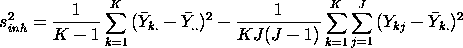
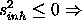
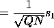
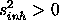

|
2. Measurement Process Characterization 2.5. Uncertainty analysis 2.5.3. Type A evaluations 2.5.3.2. Material inhomogeneity 2.5.3.2.1. Data collection and analysis |
|
| Purpose of this page |
The purpose of this page is to outline methods for:
|
| Balanced measurements at 2-levels |
The simplest scheme for identifying and quantifying the effect of
inhomogeneity of a measurement result is a balanced (equal number of
measurements per cell) 2-level nested
design. For example, K bottles of a chemical compound are
drawn at random from a lot and J (J > 1) measurements are made
per bottle. The measurements are denoted by
where the k index runs over bottles and the j index runs over repetitions within a bottle. |
| Analysis of measurements |
The between (bottle) variance is calculated using
an analysis of variance technique
that is repeated here for convenience.
 where
|
| Between bottle variance may be negative |
If this variance is negative, there is no contribution to uncertainty,
and the bottles are equivalent with regard to their chemical
compositions. Even if the variance is positive, inhomogeneity still may
not be statistically
significant, in which case it is not required to be included as a
component of the uncertainty.
If the between-bottle variance is statistically significantly (i.e., judged to be greater than zero), then inhomogeneity contributes to the uncertainty of the reported value. |
| Certification, reported value and associated uncertainty |
The purpose of assessing inhomogeneity is to be able to
assign a value to the entire batch based on the average of a few bottles,
and the determination of inhomogeneity is usually made by a less accurate
method than the certification method. The reported value for the batch
would be the average of N repetitions on Q bottles
using the certification method.
The uncertainty calculation is summarized below for the case where the only contribution to uncertainty from the measurement method itself is the repeatability standard deviation, s1 associated with the certification method. For more complicated scenarios, see the pages on uncertainty budgets. If "> sreported value  If  0">, we need to distinguish two cases and their interpretations:
|
| Relationship to prediction intervals | When the standard deviation for inhomogeneity is included in the calculation, as in the last two cases above, the uncertainty interval becomes a prediction interval ( Hahn & Meeker) and is interpreted as characterizing a future measurement on a bottle drawn at random from the lot. |